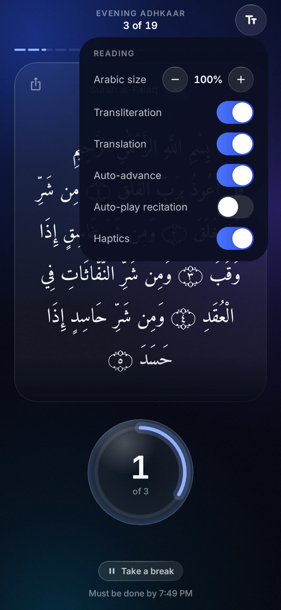

Reading
Read it
your way.

- Arabic size−100%+
- Transliteration
- Translation
- Auto-advance
- Recitation
- Haptics
Large Arabic for older eyes, the Latin letters for those still learning, a light tap with every count.
Free for AndroidMorning and evening adhkaar, on time.